地政学
ドゥブロヴニクはクロアチア南端で、ボスニア・ヘルツェゴビナとモンテネグロに近い海の玄関です。ラグーザ共和国以来の外交感覚、国境、空港、港、橋の接続が、観光都市の背後で地域安全保障と移動を左右します。
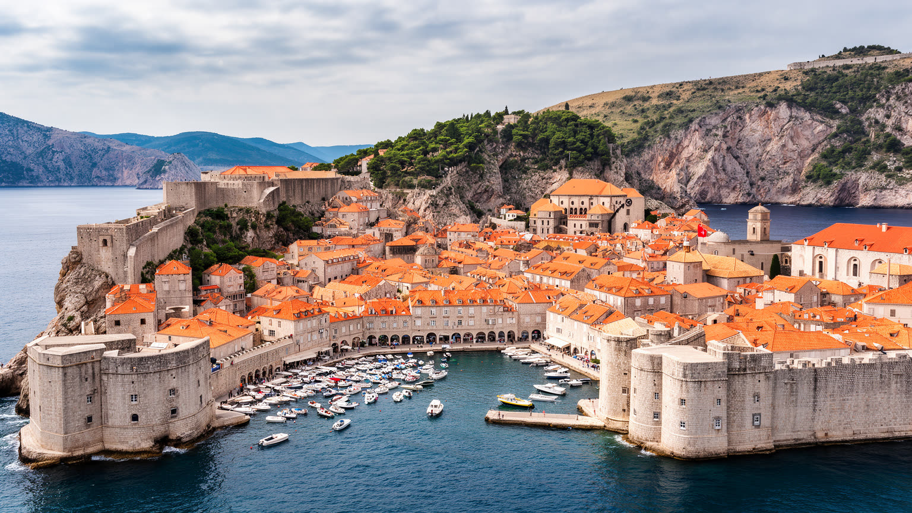
🇭🇷 クロアチア / ダルマチア / World City Atlas
アドリア海に面した城壁都市は、ラグーザ共和国の外交感覚、世界遺産観光、戦争と復興の記憶、住宅不足、島と山に挟まれた日常が密に重なるクロアチア南端の港町です。
都市の骨格
ドゥブロヴニクは旧市街の石造景観で知られるが、実際にはグルージュ港、ラパドの住宅地、スルジ山の斜面、エラフィティ諸島、空港へ続く海岸道路が一つの生活圏を作ります。
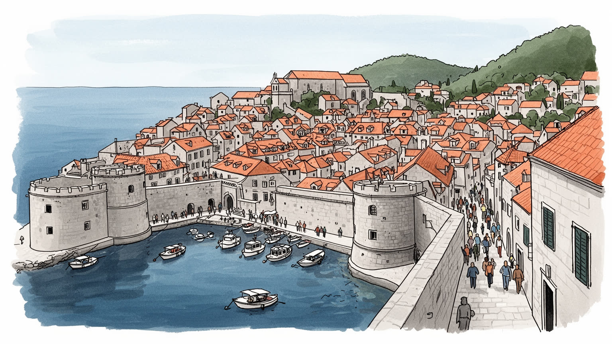
ドゥブロヴニクはクロアチア南端で、ボスニア・ヘルツェゴビナとモンテネグロに近い海の玄関です。ラグーザ共和国以来の外交感覚、国境、空港、港、橋の接続が、観光都市の背後で地域安全保障と移動を左右します。
雇用の中心は宿泊、飲食、案内、文化財管理、港湾、空港、大学、小売、建設です。観光期に仕事は増えるが、季節性、家賃、通勤、低賃金のサービス労働が若い住民の定着を難しくする面もあります。通勤も多いです。
守護聖人聖ブラシウス、カトリックの祝祭、夏の芸術祭、海洋共和国の文書文化、劇場、修道院、正教やイスラムの文化が重なります。信仰と文化は観光資源である前に、共同体の記憶を保つ力です。鐘と行列が刻みます。
旅行者は城壁、旧港、ロクルム島、路地、海辺を巡るが、住民には住宅費、短期賃貸、混雑、暑さ、物流、学校、医療が切実です。美しい旧市街を読むには、暮らし続ける条件も見る必要があります。静けさも都市資源です。
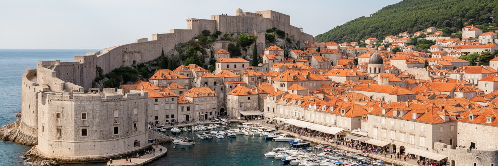
ドゥブロヴニクを最初に決めているのは、山が海へ迫る狭い地形と、それを縁取る城壁です。旧市街は舞台装置のように完結して見えますが、壁は観光の背景ではなく、海上交易、疫病管理、防衛、徴税、門の管理、住民の移動を組み立ててきた都市装置でした。ピレ門からストラドゥンを抜け、旧港へ出る短い距離の中に、陸から入る人、船で着く人、修道院、市場、倉庫、行政の場所が重なります。港は大型物流の中心ではなくなったが、遊覧船、島への船、漁船、救急、観光の動線をいまも束ねます。城壁を歩くと、赤い屋根と青い海の眺めだけでなく、外側の崖、要塞、グルージュ港、スルジ山、現代の住宅地も視界に入ります。つまり城壁は旧市街を閉じる線ではなく、都市が海と陸の圧力をどこで受け止めてきたかを読むための輪郭です。狭い路地と階段は美しいが、配達、消防、救急、清掃、住民の買い物には負担も大きいです。石灰岩の明るさ、強い日差し、潮風、観光客の歩く速度は、同じ空間を違う意味に変えます。夜明けには商品を運ぶ台車や船が動き、昼には人の流れが観光へ傾きます。海側と山側の門は、風や混雑の感じ方も変えます。門前の小さな滞留も都市を測る手がかりです。ドゥブロヴニクの城壁と港を読むことは、景観の名所を数えることではなく、小さな共和国が海の危険と利益をどう都市の形へ変えたかを読み解くことです。
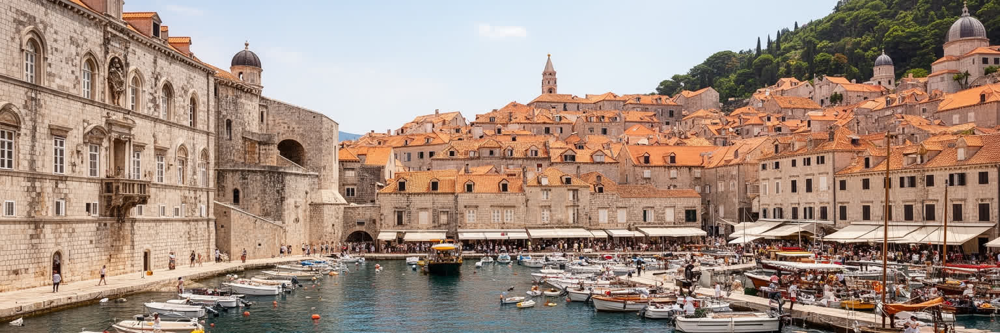
ドゥブロヴニクは、歴史的にはラグーザ共和国として、ヴェネツィア、オスマン帝国、ハプスブルク、バルカン内陸、地中海交易の間で生き延びた都市国家でした。大きな軍事力よりも、外交、商業情報、海運、法制度、慎重な均衡感覚が都市の安全を支えました。総督宮、スポンザ宮、修道院、旧港、書庫の文化は、富の誇示だけでなく、記録し、交渉し、規則を守ることが小国の生存戦略でしたことを示しています。ラグーザの自由の理念は都市の誇りとして語られるが、その繁栄は船員、商人、職人、使用人、周辺農村、島々、内陸との関係に支えられていました。地中海の疫病に対応する隔離制度、海上保険、奴隷貿易をめぐる変化、宗教共同体との関係も、この記憶の一部です。共和国の遺産を観光用の華麗な物語に閉じると、都市が抱えた緊張は見えなくなります。むしろドゥブロヴニクの重要性は、強国の間で小さな港町がどのように交渉し、情報を集め、海の利益と危険を管理したかにあります。現代のクロアチア南端という位置、近隣国境、EUの外縁に近い感覚にも、その歴史は響きます。石造の宮殿は過去の飾りではなく、地政学を日常の行政と商売へ落とし込んだ都市の記録です。公文書や海図への信頼も、その都市性を支えました。共和国の記憶は、都市が美しいだけでなく、危うい均衡の上で賢く振る舞ってきたことを思い出させます。
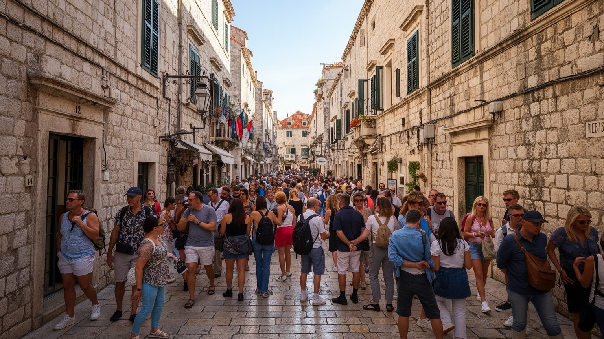
ドゥブロヴニクの観光は、都市の収入と国際的な知名度を支える一方、旧市街の空間を強く圧迫しています。城壁、ストラドゥン、旧港、要塞、ケーブルカー、海辺の展望は短い滞在でも回りやすく、クルーズ船や日帰り客が同じ時間帯に集中すると、狭い門や階段は生活動線として使いにくくなります。宿泊、飲食、案内、清掃、土産物、小型船、撮影関連の仕事は増えるが、季節性が強く、繁忙期の長時間労働と閑散期の収入不足が同じ家庭を揺らします。短期賃貸は所有者に収入をもたらす一方、住民向け住宅を減らし、家賃を上げ、近所の店を旅行者向けへ変えます。人気映像作品のロケ地としての消費も、都市を実在の生活空間より記号として扱わせやすいです。観光管理は、訪問者を拒むためではなく、限られた城壁都市を壊さず共有するために必要です。入城時間の分散、クルーズ寄港の調整、公共交通、廃棄物処理、ガイドの質、住宅政策、地元商店の保護は一体の課題になります。長く滞在し、旧市街だけでなくグルージュ、ラパド、島々、周辺地域へ足を延ばす旅は、負荷を広げる可能性を持ちます。観光都市として成功するほど、誰がその成功の費用を払うのかが問われます。静かな季節の収入をどう作るかも課題です。ドゥブロヴニクの美しさを守るには、旅行者の視線だけでなく、朝にごみを出し、学校へ向かい、港で働く人の時間を守る必要があります。
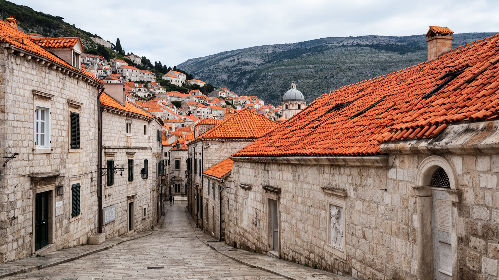
ドゥブロヴニクの近現代を読むうえで、ユーゴスラビア解体期の包囲と砲撃の記憶は避けられないです。世界遺産の旧市街が攻撃を受けた事実は国際社会に大きな衝撃を与え、石壁や屋根の損傷は、文化財が戦争の対象になりうることを示しました。現在の赤い瓦屋根の整った景観は、古いまま残った証拠であると同時に、戦後に修復された記憶の層でもあります。観光客が城壁から眺める屋根の色の違い、博物館や資料展示、スルジ山の要塞、住民の語りは、都市が単なる中世の舞台ではなく、二十世紀末の暴力を経験した場所であることを伝えます。戦争の記憶は、クロアチアの独立、近隣国との関係、難民、兵士、家族の喪失、文化財保護、国際報道の力を含んでいます。一方で、記憶が観光商品として消費される危うさもあります。砲撃跡を見学する時、訪問者はドラマチックな物語だけを求めるのではなく、住民が避難し、水や電気を失い、家族や隣人を守った現実を想像する必要があります。修復は都市を元に戻しただけではなく、何を記録し、何を忘れ、どの関係を再び結ぶのかを選ぶ作業でした。学校で語られる記憶も、次世代の距離感を形づくります。ドゥブロヴニクの戦争記憶は、過去の悲劇を固定するものではなく、平和、隣国関係、遺産保護、観光の倫理を考える入口です。美しい旧市街の静けさには、壊されたものを直しながら暮らしを続けた人々の時間が含まれています。
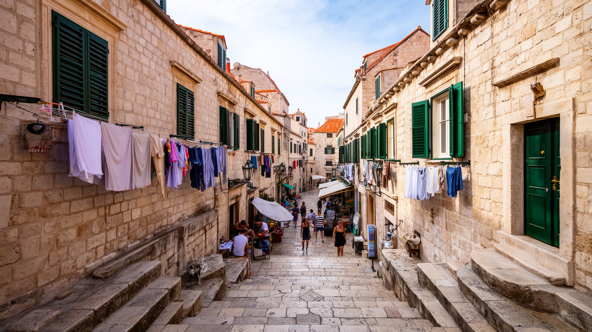
ドゥブロヴニクの旧市街は世界的な景観を持つが、そこに住み続けることは容易ではありません。石造住宅は魅力的でも、階段、湿気、修繕費、物流、騒音、観光客の往来、夏の暑さ、駐車場の不足が日常の負担になります。短期賃貸や別荘利用が増えると、住民向けの部屋は減り、若い家族や働く人はラパド、グルージュ、モコシツァ、周辺自治体へ移らざるを得ないです。住民が減れば、学校、診療所、食料品店、修理屋、郵便、近所の見守り、夜の窓明かりも弱くなります。旧市街が美しく保存されても、生活の用事が消えれば、都市は舞台に近づきます。観光業で働く人ほど中心部に住みにくいという矛盾は、遺産都市の深い問題です。住宅政策、短期賃貸の管理、公共住宅、学生や若い家族への支援、日用品店の保護、配達と清掃の仕組みは、城壁の修復と同じくらい重要になります。住民は観光客の背景ではなく、都市を都市として保つ主体です。朝の洗濯物、階段での挨拶、教会の鐘、子どもの通学、近所の買い物は、写真に写りにくいが、ドゥブロヴニクの価値を支えます。近所に鍵を預けられる関係も、防災や高齢者の見守りに効きます。空き家の窓は、共同体の薄さも示します。旧市街を守るとは、石のファサードを保存するだけではありません。そこに暮らす人が、繁忙期にも自分の街を歩き、眠り、働き、老いることができる条件を守ることです。
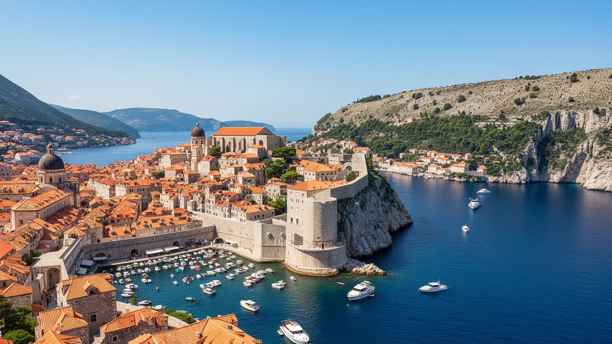
ドゥブロヴニクの気候は、乾いた明るい夏と、雨や風が増える冬を持つ地中海性です。夏の青い海と石の街の輝きは観光の大きな魅力ですが、同時に暑さ、日陰の不足、水需要、混雑、屋外労働の負担を生みます。石畳と城壁は熱をため、狭い路地では風の抜け方が場所によって大きく違います。ホテル、飲食、案内、船、清掃、建設で働く人は、旅行者が休暇として楽しむ気候の中で長時間働きます。冬には観光客が減り、海からの風、強い雨、湿気が建物の維持や交通に影響します。アドリア海の穏やかな印象の背後には、暴風、波、土砂、山火事、断水、沿岸インフラの脆さがあります。気候変動は海面、熱波、極端な雨、観光シーズンの長期化として都市に現れ、旧市街だけでなく空港道路、港、島々、周辺集落にも影響します。対策は冷房や堤防だけでは足りません。日陰、緑、給水、労働時間、災害情報、文化財の湿気対策、島への交通、低所得世帯の住環境を含めて考える必要があります。水道や電力の需要が一気に増える夏は、都市基盤の限界も見えやすいです。冬の静けさは、修繕と準備の時間にもなります。ドゥブロヴニクの気候は美しい景観を作る資源であると同時に、誰が涼しい場所を持ち、誰が炎天下で働くのかを問う社会問題でもあります。海の光を楽しむ都市であるほど、その光が生活と労働に与える負担を見落としてはなりません。
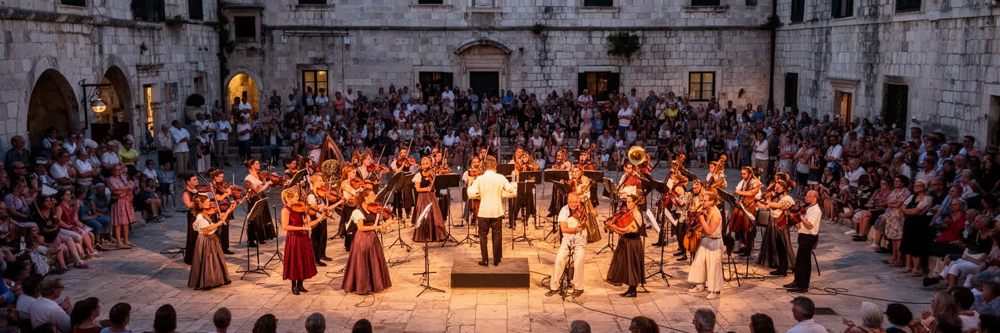
ドゥブロヴニクの文化は、石造の街並みを背景にした上品な観光イベントだけではありません。守護聖人聖ブラシウスの祝祭は、カトリック信仰、都市の守護、地域共同体の誇りを結び、旧市街の通りを儀礼の空間に変えます。夏には演劇、音楽、舞踊、野外公演が城壁、宮殿、中庭、広場を舞台にし、都市そのものを劇場にします。修道院の図書館、薬局、文書館、教会音楽、学校、大学、海に関わる言葉の文化は、ラグーザ共和国以来の文書都市としての性格を伝えます。周辺には正教、イスラム、ボスニア内陸、モンテネグロ、イタリアとの歴史的接触もあり、ドゥブロヴニクの文化は単一の海辺リゾートでは説明できません。祭りや公演は観光客を呼ぶが、住民にとっては季節を確認し、祖先や聖人、都市の自由を思い出す時間でもあります。問題は、文化が外からの消費だけに合わせられる時です。チケット価格、会場利用、騒音、混雑、若い制作者の住まい、地元の参加機会が偏れば、文化は街の生活から離れてしまいます。石の広場で演じられる音楽や演劇の価値は、建物の美しさだけでなく、そこを歩く住民の記憶と結びつくからこそ深いです。方言や歌、海の言い回しも地域の感覚を残します。拍手の後の静けさも街の余韻になります。ドゥブロヴニクの文化を読むには、聖堂の儀礼、夏の舞台、学校の合唱、地域の小さな行事を同じ都市の時間として見る必要があります。
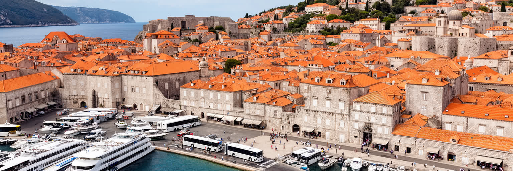
ドゥブロヴニクは有名な観光都市でありながら、交通地理は単純ではありません。クロアチア本土の南端に細長く伸びる海岸にあり、背後には山と国境が迫ります。長く国内移動にはボスニア・ヘルツェゴビナのネウム回廊を通る現実があり、ペリェシャツ橋の開通はクロアチア領内で南部を結ぶ意味を持ちました。都市の日常は、空港、海岸道路、バス、グルージュ港、フェリー、旧港の小型船、島への航路に支えられています。観光客には空港から旧市街までの移動が見えますが、住民にとっては通勤、通学、病院、仕入れ、建設資材、廃棄物、救急、消防が同じ細い回廊に乗ります。夏の渋滞、駐車不足、クルーズ寄港、バス停の混雑は、観光問題であると同時に都市サービスの問題です。鉄道がないことも、物流と低炭素移動の選択肢を狭めます。海上交通は島の暮らしを支えますが、天候、燃料費、運航頻度に左右されます。アクセスが便利になるほど訪問者は増え、混雑と住宅圧力も高まるため、交通政策は観光成長の量を調整する道具にもなります。歩行者空間を守りながら、働く人、住民、高齢者、障害のある人、島民の移動を確保することが重要です。空港便の季節差も、雇用と物価に影響します。ドゥブロヴニクの美しい孤立感は、実際には多くの道路、港、空港労働に支えられています。その見えにくい接続を読むと、旧市街の石畳の外側にある都市圏の緊張が分かります。
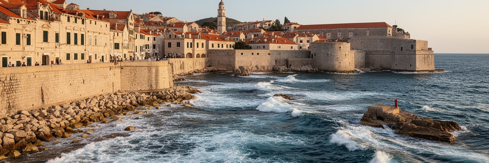
ドゥブロヴニクの魅力は海に近いことですが、その近さは都市の脆さでもあります。旧市街、港、海岸道路、ホテル、ビーチ、島への航路は、波、暴風、塩害、浸食、豪雨、山火事後の土砂、海面上昇の影響を受けやすいです。石造建築は堅牢に見えますが、塩分と湿気は壁、金属、木部、屋根、排水に少しずつ負担をかけます。海岸沿いの観光開発は眺望と収入を生む一方、斜面の土地利用、道路容量、水需要、廃水処理、景観保護を難しくします。クルーズ船、小型船、遊覧船、マリーナの利用も、波、排ガス、海水の質、港湾空間の使い方に関わります。沿岸リスクを考える時、旧市街の文化財だけを守ればよいわけではありません。空港へ続く道路、グルージュ港、ラパドの住宅地、島の集落、農地、観光労働者の住まい、避難経路まで含めて都市の安全が決まります。気候変動が進めば、夏の観光期と災害対応期が重なり、訪問者の多さが避難や医療を難しくする可能性もあります。対策には、建築規制、海岸の自然保護、排水、早期警報、船の運航管理、文化財修復、住民への情報共有が必要です。保険や修繕費の上昇は家計にも響きます。島の高齢者には航路の安定も重要です。海を背景として眺めるだけなら、ドゥブロヴニクは永遠に美しく見えます。しかし都市として読むなら、海と山の間に限られた場所へ、多くの人と施設を集めることのリスクを直視しなければなりません。
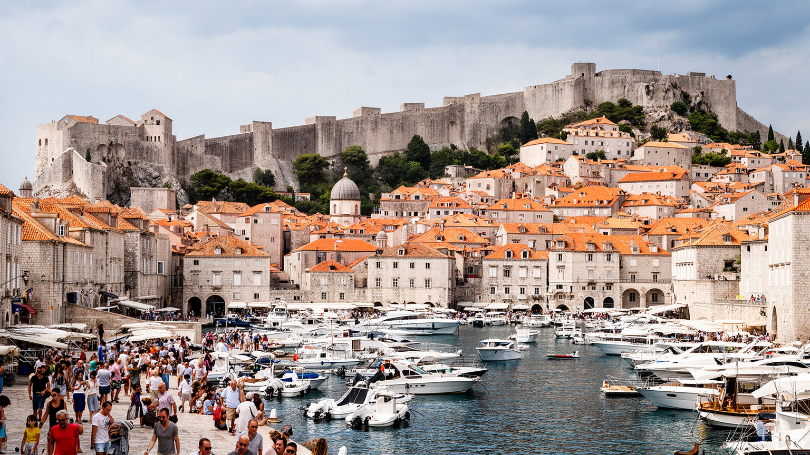
ドゥブロヴニクは、世界の旅行者がすでに強いイメージを持って訪れる都市です。赤い屋根、白い石、青い海、城壁、旧港は、到着前から記憶の中にあります。しかし都市を読むには、その完成された絵の外側へ視線を広げる必要があります。ラグーザ共和国の外交、国境に近い位置、ユーゴスラビア解体期の戦争、修復された屋根、短期賃貸で減る住民、観光期の労働、空港道路、島への船、暑さと沿岸リスクは、すべて同じ都市の現在です。美しさはドゥブロヴニクの力ですが、強すぎるイメージは生活の複雑さを隠します。城壁の上から見える旧市街を歩く時、路地の幅、階段の多さ、店の種類、夜の明かり、住民の気配を確かめるとよいです。港へ向かえば、島民、通勤者、クルーズ客、仕入れの車、バスが同じ場所を使っていることが分かります。スルジ山やラパドへ視線を移すと、旧市街だけでは都市が成り立たないことも見えてきます。持続可能なドゥブロヴニクとは、訪問者を減らすだけの都市ではありません。訪問の量と時間を管理し、住民の住宅を守り、文化を地元の生活から切り離さず、戦争の記憶を丁寧に伝え、海と気候のリスクに備える都市です。短い滞在でも、その関係を意識すれば旅の質は変わります。美しい景観を未来へ渡すには、写真の中心にある城壁だけでなく、その周囲で暮らし働く人の条件を守る制度が欠かせません。